STL
STL概述
什么是STL
STL（Standard Template Library ），即标准模板库，是一个具有工业强度的，高效的C++程序库；它被容纳于C++标准程序库（ C++ Standard Library ）中，是ANSI/ISO C++标准中最新的也是极具革命性的一部分；该库包含了诸多在计算机科学领域里所常用的基本数据结构和基本算法，为广大C++程序员们提供了一个可扩展的应用框架， 高度体现了软件的可复用性。
STL是最新的C++标准函数库中的一个子集，这个庞大的子集占据了整个库的大约80%的份量。
STL基本组件
STL主要由容器，迭代器和算法组成。
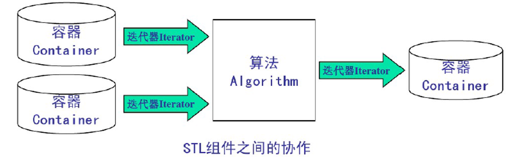
容器：可容纳各种数据类型的数据结构；
迭代器：可依次存取容器中元素的东西；
算法：用来操作容器中的元素的函数模版。例如，STL用sort()来对一个vector中的数据进行排序。
举例说明：数组int array[100]就是一个容器，而int*类型的指针就可以作为迭代器，可以为这个容器编写一个排序算法。
Vector容器
什么是Vector容器
Vector（向量）是一个封装了动态大小数组的顺序容器；跟任意其它类型容器一样，它能够存放各种类型的对象；Vector是用动态数组来实现的。
在使用Vector的时候需要包含头文件和使用命名空间：
#include <vector>using namespace std;Vector支持随机存取，它有大小（size）和容量（capacity）两个属性，大小（size）就是实际元素的个数，容量（capacity）表示能容纳元素最大的数量，如果插入元素时，元素个数超过容量大小，则需要重新配置内部存储器。
使用Vector容器
创建容器
创建（初始化）容器有如下5种方式：
vector<int> v1; // 创建一个空的容器，元素类型为int类型vector<int> v2(100); // 创建一个100个元素的容器，每个元素默认值为0vector<int> v3(100, 8); // 创建一个100个元素的容器，每个元素的值为8vector<int> v4(v3); // 复制一个容器int tmpArray[] = {1, 2, 3, 4, 5, 6, 7, 8, 9};vector<int> v5(tmpArray+2, tmpArray+5); // 复制tmpArray数组tmpArray+2到tmpArray+5区间内的元素到容器中添加元素
有2个函数可以添加元素，第一个push_back函数：
/* 语法格式：void push_back(const T& x); 函数意义：增加一个元素到容器的尾部*/for (int i = 0; i < 10; i++) { v1.push_back(i);}第二个是insert函数，这个函数有3种方式：
/* 语法格式：iterator insert(iterator it, const T& x); 函数意义：在容器迭代器指向元素之前增加一个元素*/v1.insert(v1.begin(), 99);/* 语法格式：iterator insert(iterator it, int n,const T& x); 函数意义：在容器迭代器指向元素之前增加指定个数的相同的元素*/v1.insert(v1.begin()+3, 2, 98);/* 语法格式：iterator insert(iterator it, const_iterator first, const_iterator last); 函数意义：在容器迭代器指向元素之前插入指定数组指定区间内的元素*/int tmpArray[] = {1, 2, 3, 4, 5, 6, 7, 8, 9};v1.insert(v1.begin(), tmpArray+2, tmpArray+5);删除元素
删除容器中的元素有三个函数可以操作，第一个是pop_back函数：
/* 语法格式：void pop_back(); 函数意义：删除容器尾部的一个元素*/v1.push_back();第二是erase函数，这个函数有两种使用方法：
/* 语法格式：iterator erase(iterator it); 函数意义：删除指定位置的元素*/v1.erase(v1.begin()+3);/* 语法格式：iterator erase(iterator first,iterator last); 函数意义：删除指定区间内的元素*/v1.erase(v1.begin()+3, v1.begin()+5);Deque容器
什么是Deque容器
1.Deque是Double-Ended Queue的缩写，是在首尾两端增删元素具有较佳性能的容器；
2.Deque容器与Vector容器相似都是模拟动态数组，它们都是顺序容器，所有适用于Vector的操作都适用于Deque；
3.Deque还有push_front函数(将元素插入到前面)和pop_front函数(删除最前面的元素)操作（Vector容器只有在尾部操作的方法，因此Vector适用于尾部的操作）。
使用Deque容器
首先需要包含头文件和使用命名空间：
#include <deque>using namespace std;由于在Deque容器中适用所有Vector的操作，这里不过多赘述，简单说下的2个独有函数：
/* 语法格式：void push_front(const T& x); 函数意义：将元素插入到首部*/v1.push_front(123);/* 语法格式：void pop_front(); 函数意义：删除首部的元素*/v1.pop_front();List容器
什么是List容器
1.List容器是一个双向链表；
2.不支持随机存取，不支持at函数和[]操作符；
3.List容器除了具有所有顺序容器都有的函数以外，还支持以下函数：
push_front：将元素插入到首部pop_front：删除首部的元素sort：排序(list单独实现)remove：删除与指定值相等的元素unique：删除所有和前一个元素相同的元素merge：合并两个链表，并清空被合并的那个(list单独实现)reverse：颠倒链表如下图是List容器的存储结构：

可以看到，list 容器中各个元素的前后顺序是靠指针来维系的，每个元素都配备了 2 个指针，分别指向它的前一个元素和后一个元素。其中第一个元素的前向指针总为 null，因为它前面没有元素；同样，尾部元素的后向指针也总为 null。
使用List容器
List容器具有所有顺序容器都有的函数，这里也不赘述那些函数了，但是有一个地方需要注意，就是List容器也没办法使用类似v1.begin()+3这种用法，如果你要使用的时候建议单独写一个函数：
list<int>::iterator MoveIterator(list<int>::iterator* pIt, int nLen) { for (int i = 0; i < nLen; i++) { (*pIt)++; } return *pIt;}
接下来我们了解一下List容器独有的函数，push_front和pop_front函数在Deque容器中已经了解了这里也不再重复。
首先我们来看下sort函数，如下图所示当使用这个函数的时候就会给我们自动按数字大小排序：

接下来是remove函数，如下图所示当使用这个函数的时候就会删除与指定值相等的元素：
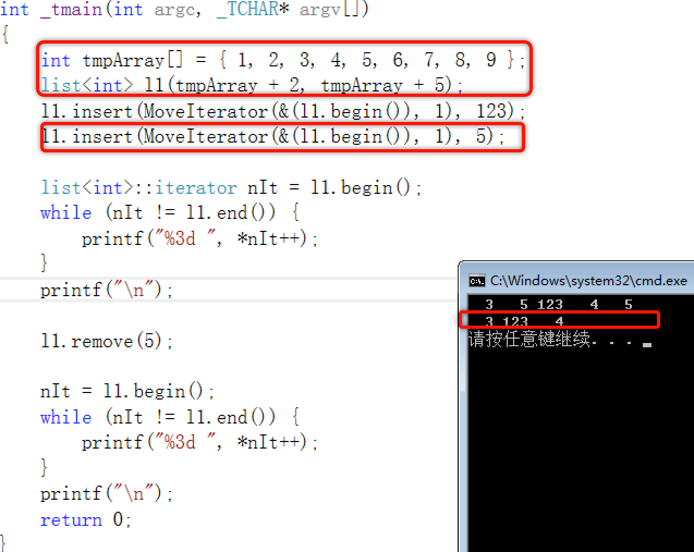
接着是unique函数，如下图所示当使用这个函数的时候就会删除所有和前一个元素相同的元素，需要注意这里并不是删除所有重复的而是相邻的，如果你想删除所有重复的完全可以搭配sort函数一起使用：
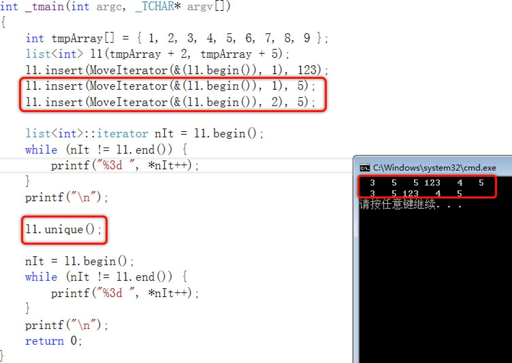
再接着就是merge函数，如下图所示当使用这个函数的时候就会合并两个链表，并清空被合并的那个链表，值得注意的是，两个有序的链表合并了，最终的也是一个有序的链表：

最后就是reverse函数，如下图所示当使用这个函数的时候就会颠倒链表：

Set/Multiset容器
什么是Set/Multiset容器
1.底层使用平衡的搜索树：红黑树；
2.内部元素有序排列，新元素插入的位置取决于它的值，查找速度快；
3.支持通过键值实现快速读取；
4.不可以使用at函数与[]操作符；
5.不可以直接修改set或multiset容器中的元素值，因为该类容器是自动排序的，如果希望修改一个元素值，必须先删除原有的元素，再插入新的元素；
6.multiset支持同一个键多次出现的set类型。
使用Set/Multiset容器
在使用之前需要包含头文件和使用命名空间：
#include <set>#include <functional>using namespace std;创建容器
创建（初始化）Set容器有如下5种方式：
set<int> s1; // 创建一个空的容器，默认使用小于比较器，也就是从小到大排序set<int, less<int>> s2; // 创建一个空的容器，使用小于比较器，也就是从小到大排序set<int, greater<int>> s3; // 创建一个空的容器，使用大于比较器，也就是从大到小排序int nArray[] = {1, 2, 3, 4, 5, 6};set<int> s4(nArray, nArray + 4); // 复制指定数组的区间的内容作为容器的元素set<int> s5(s4.begin(), s4.end()); // 复制指定set容器的区间的内容作为容器的元素set<int> s6(s5); // 复制一个容器 我们可以使用一个新的方法for_each去打印Set容器，这个方法就是STL的一个算法：
#include <set>#include <functional>#include <algorithm> // 记得包含这个头文件#include <stdio.h>#include <tchar.h>using namespace std;void MyPrintFun(int i) { printf("%d ", i);}int _tmain(int argc, _TCHAR* argv[]){ int nArray[] = {1, 2, 3, 4, 5, 6}; set<int> s4(nArray, nArray + 4); // 复制指定数组的区间的内容作为容器的元素 for_each(s4.begin(), s4.end(), MyPrintFun); // 传入首尾和自定义的函数 return 0;}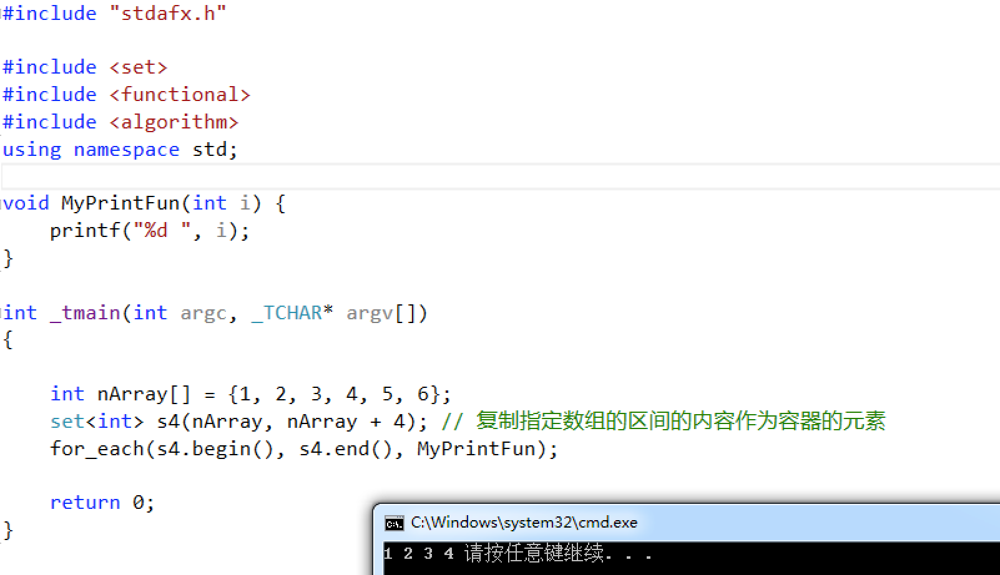
添加元素
添加元素可以使用insert函数：
s4.insert(5); // 单个元素添加s4.insert(nArray+5, nArray+6); // 添加指定数组区间的值s4.insert(s1.begin(), s1.end()); // 添加指定容器区间的值需要注意的是Set容器不允许出现重复的键值（可以使用Multiset容器来使用重复的键值），并且默认会自动排序：
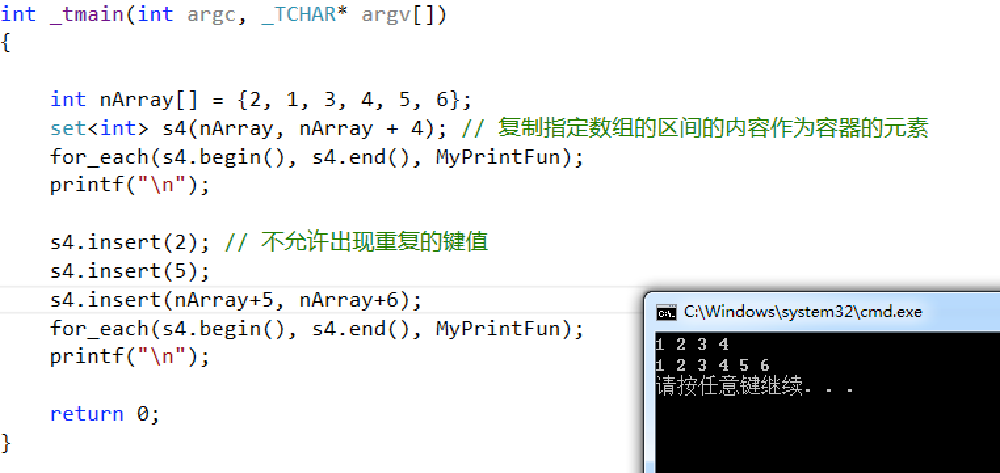
删除元素
删除元素可以使用erase函数：
s4.erase(5); // 指定键值删除s4.erase(s4.begin()); // 删除迭代器指向的元素set<int>::iterator itA = s4.begin();set<int>::iterator itB = s4.begin();itB++;itB++;s4.erase(itA, itB); // 删除指定迭代器区间内的元素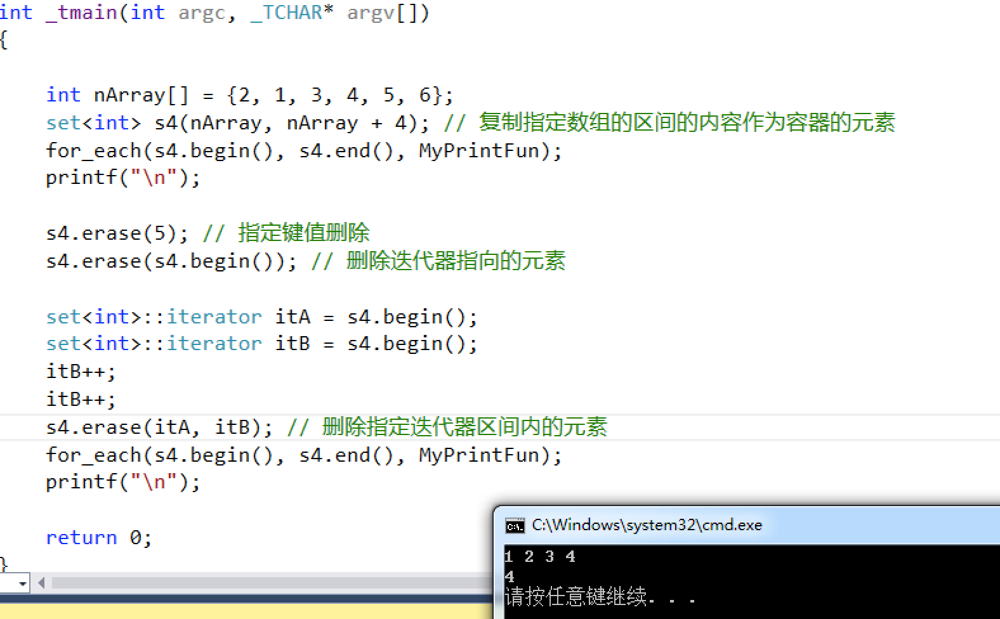
修改元素
Set容器不可以直接修改容器内的数据，要想完成这个修改元素的操作，就先删除后增加。
查找元素
查找元素可以使用find函数：
if (s4.find(2) != s4.end()) { printf("Find");}else { printf("No Find");}需要注意的是，这个函数返回的是一个迭代器，如果找到了就返回迭代器，如果没有找到就返回与s4.end()一样的迭代器：

判断元素是否存在
判断元素是否存在对于Multiset容器来说可以知道指定元素有几个。
可以使用count函数来判断元素是否存在，从名字上来看也知道这是一个统计数量的函数，返回的内容就是指定元素的数量：
s4.count(1);对于Set容器来说返回的0就是不存在，1就是存在，单对于Multiset容器来说返回0为不存在，返回大于0则表示存在。

Map/Multimap容器
什么是Map/Multimap容器
1.底层使用平衡的搜索树：红黑树；
2.元素包含两部分key和value，key和value可以是任意类型；
3.根据元素的key自动对元素排序，因此根据元素的key进行定位很快，但根据元素的value定位很慢；
4.不能直接改变元素的key，可以通过[]操作符操作元素的value；
5.Map容器中不允许key相同的元素，Multimap容器允许key相同的元素。
以下就是这两个容器内部的存储结构：
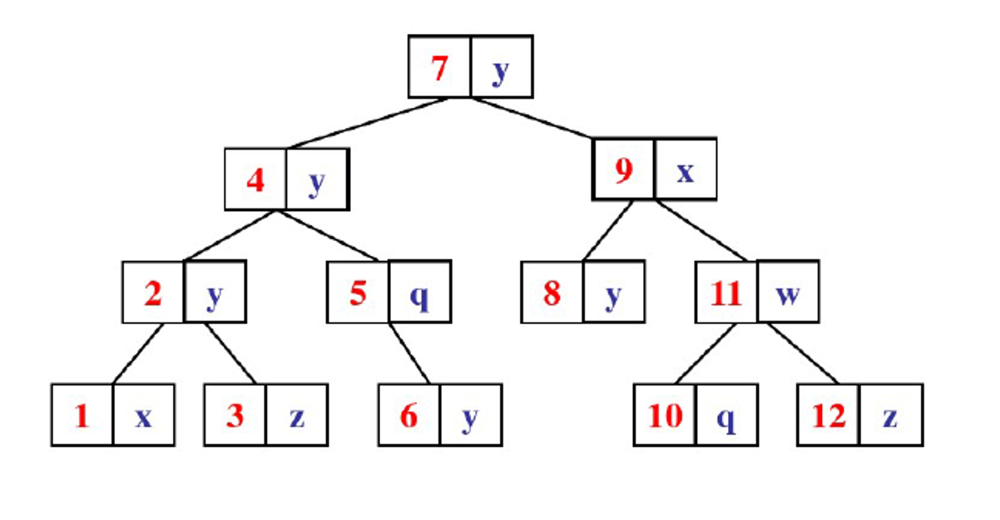
使用Map/Multimap容器
在使用之前需要包含头文件和使用命名空间：
#include <map>#include <functional>using namespace std;创建容器
犹豫Map与Set容器实际上是一样的类型，只不过有一点小差异，这里至今把之前的代码拿过来修改一下就可以了（相较于Map容器，这里多了一个value需要初始化类型）：
map<int, string> m1; // 创建一个空的容器，key是int类型，value是string类型，默认使用小于比较器，也就是从小到大排序map<int, string, less<int>> m2; // 创建一个空的容器，使用小于比较器，也就是遵循key的值从小到大排序map<int, string, greater<int>> m3; // 创建一个空的容器，使用大于比较器，也就是从大到小排序map<int, string> m4(m3.begin(), m3.end()); // 复制指定set容器的区间的内容作为容器的元素map<int, string> m5(m4); // 复制一个容器 同样我们也可以使用for_each来打印输出，但在这之前需要做一个改造：
void MyPrintFun(map<int, string>::value_type vt) { cout << vt.first << ":" << vt.second << " ";}入参是一个键值对，first成员就是key，second成员就是value，另外这里输出参数由printf变成了cout，这是为了可以更方便的去编写代码，使用printf需要提前知道输出数据的类型然后使用，而cout不需要。
另外由于我们这里使用了cout和string所以需要包含这两个头文件：
#include <iostream>#include <string>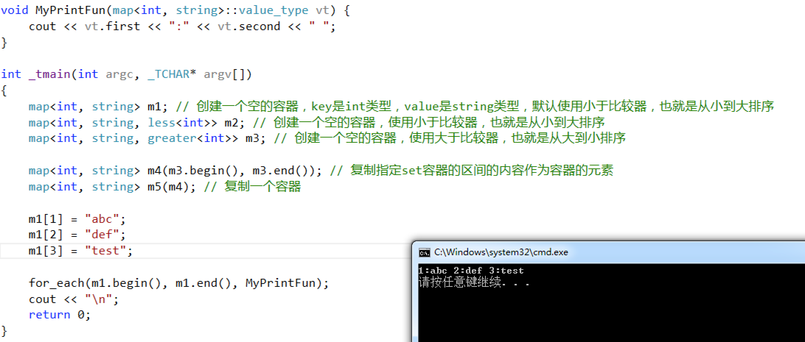
添加元素
添加元素可以使用insert函数和[]的方式：
m1[1] = "a"; // 单个元素添加m1.insert(map<int, string>::value_type(2, "b")); // 单个元素添加m2.insert(m1.begin(), m1.end()); // 添加指定容器区间的值 Map容器也不允许出现重复的键值（可以使用Multimap容器来使用重复的键值），并且默认会自动排序：
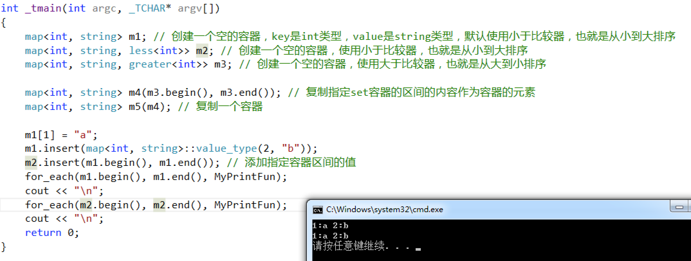
删除元素
删除元素可以使用erase函数：
m1.erase(5); // 指定键值删除m1.erase(m1.begin()); // 删除迭代器指向的元素map<int, string>::iterator itA = m1.begin();map<int, string>::iterator itB = m1.begin();itB++;itB++;m1.erase(itA, itB); // 删除指定迭代器区间内的元素
修改元素
Set容器不可以直接修改容器内的数据，但是在Map容器中是可以修改值(value)的，不可以修改键(key)的。
m1[2] = "123123"; // 使用key去直接修改值
查找元素
查找元素可以使用find函数：
if (m1.find(2) != m1.end()) { printf("Find");}else { printf("No Find");}需要注意的是，这个函数返回的是一个迭代器，如果找到了就返回迭代器，如果没有找到就返回与m1.end()一样的迭代器：

判断元素是否存在
判断元素是否存在对于Multimap容器来说可以知道指定元素有几个。
可以使用count函数来判断元素是否存在，从名字上来看也知道这是一个统计数量的函数，返回的内容就是指定元素的数量：
m1.count(1);对于Map容器来说返回的0就是不存在，1就是存在，单对于Multimap容器来说返回0为不存在，返回大于0则表示存在。

Stack容器
什么是Stack容器
Stack容器又称之为栈容器，这是一个先进后出顺序的容器，只能进行增加、删除、访问栈顶的元素；其有这几种操作方法：
push，将元素压入栈；
top，返回栈顶元素的引用，但不移除；
pop，从栈中移除栈顶元素，但不返回。
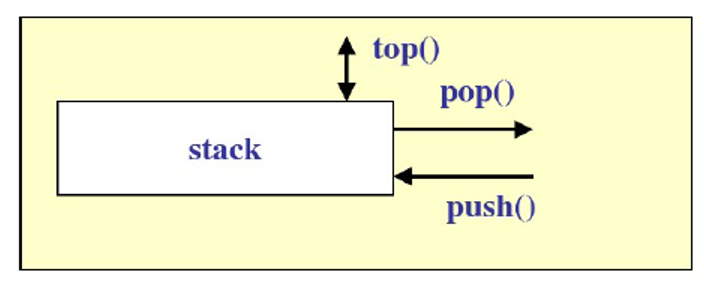
使用Stack容器
在使用之前需要包含头文件和使用命名空间：
#include <stack>using namespace std;几个操作都很简单，直接上手使用即可：
stack<int> s1; // 创建容器s1.push(1); // 添加元素s1.push(2);s1.push(3);cout << "S1 size: " << s1.size() << endl;s1.pop(); // 删除栈顶元素cout << "S1 size: " << s1.size() << endl;int a = s1.top(); // 取出栈顶元素cout << "S1 top value: " << a << endl;// 清空元素while (!s1.empty()){ s1.pop();}// 清空元素s1.swap(stack<int>());cout << "S1 size: " << s1.size() << endl;
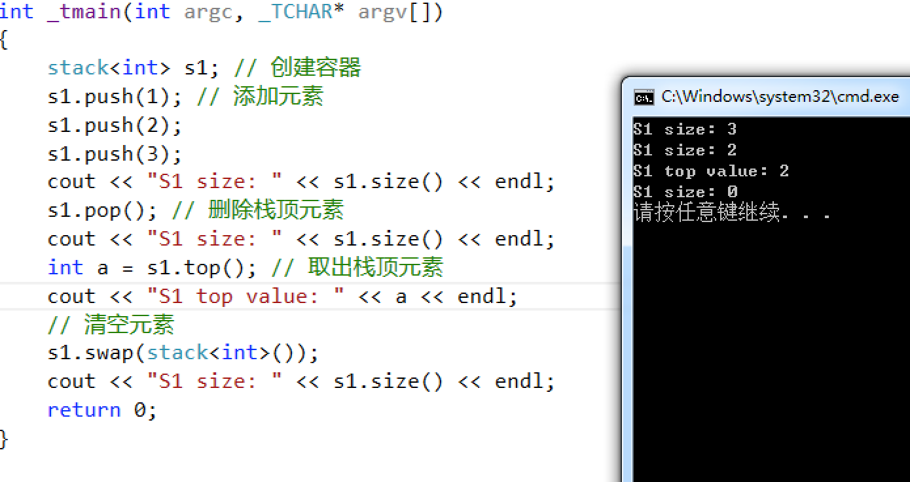
Queue容器
什么是Queue容器
Stack容器又称之为队列容器，这是一个先进先出顺序的容器；其有这几种操作方法：
push，将元素添加到队列的尾部；
front，返回队列头部的引用，但不移除；
back，返回队列尾部的引用，但不移除；
pop，从队列头部移除元素但不返回。
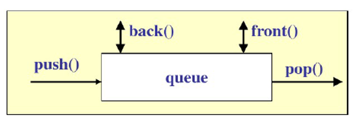
使用Queue容器
在使用之前需要包含头文件和使用命名空间：
#include <queue>using namespace std;几个操作都很简单，直接上手使用即可：
queue<int> q1; // 创建容器q1.push(1); // 添加元素q1.push(2);q1.push(3);cout << "Q1 size: " << q1.size() << endl;int a = q1.front(); // 获取队列头部元素cout << "Q1 top value: " << a << endl;int b = q1.back(); // 获取队列尾部元素cout << "Q1 bottom value: " << b << endl;q1.pop(); // 删除元素cout << "Q1 size: " << q1.size() << endl;// 清空元素q1.swap(queue<int>());// 清空元素while (!q1.empty()){ q1.pop();}cout << "Q1 size: " << q1.size() << endl;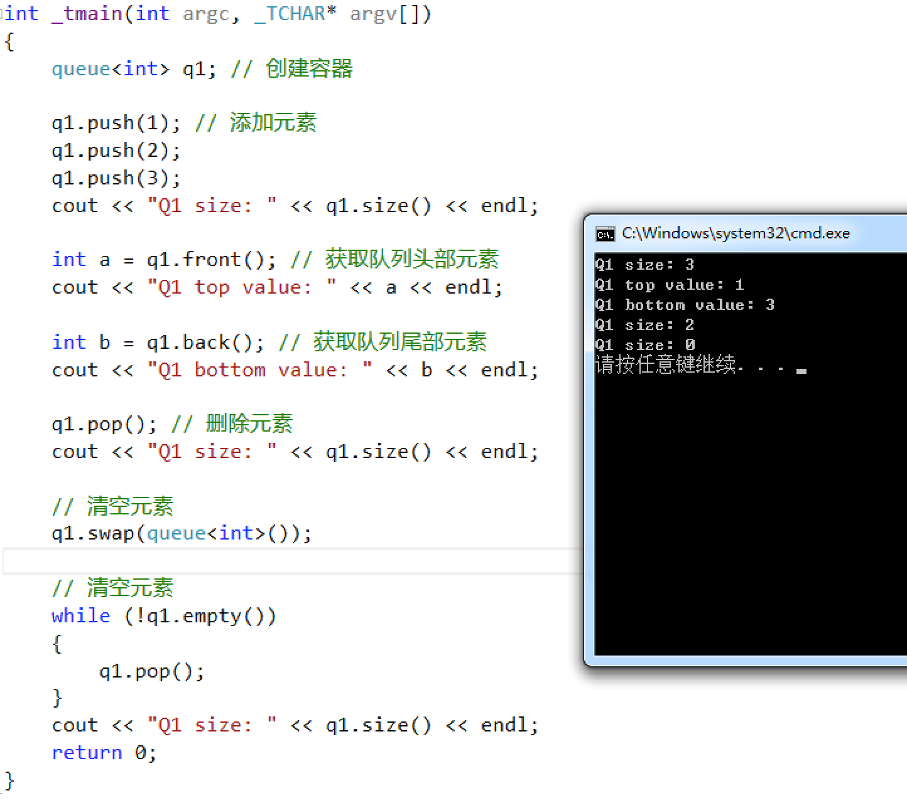
Priority Queue容器
什么是Priority Queue容器
Priority Queue容器又称之为优先队列容器，该容器以某种排序规则（默认是less）管理队列中的元素；其有这几种操作方法：
push，根据元素的优先级将元素置入队列
top，返回队列头部（最大的元素）的引用，但不移除
pop，删除队列头部（最大）的元素，但不返回
使用Priority Queue容器
在使用之前需要包含头文件和使用命名空间：
#include <queue>#include <functional>using namespace std;几个操作都很简单，直接上手使用即可：
priority_queue<int, vector<int>> q; // 创建了一个容器是按照小于比较器排序的// 需要注意这里在创建容器的时候第一个参数表示类型，第二个则表示容器，默认为vector，第三个则表示排序方式priority_queue<int, vector<int>, less<int>> q1; // 创建了一个容器是按照小于比较器排序的priority_queue<int, vector<int>, greater<int>> q2; // 创建了一个容器是按照大于比较器排序的q.push(100); // 添加元素q.push(200);q.push(300);cout << "Q size: " << q.size() << endl;while (!q.empty()){ cout << q.top() << endl; // 返回队列头部(最大的元素)的引用，但不移除 q.pop(); // 删除队列头部（最大）的元素，但不返回}
算法
STL算法简介
STL提供了能在各种容器中使用的通用算法，也就表示可以在不同的容器中使用，比如插入，删除，查找，排序等，这些算法主要是存放在头文件<algorithm>，<numeric>和<functional>中。
头文件<algorithm>是所有STL头文件中最大的一个，其中常用到的功能范围涉及到比较、交换、查找、遍历操作、复制、修改、反转、排序、合并等等。
头文件<numeric>体积很小，只包括几个在序列上面进行简单数学运算的模板函数，包括加法和乘法在序列上的一些操作。
头文件<functional>中则定义了一些模板类，用于声明函数对象。
STL提供了大量实现算法的模版函数，只要我们熟悉了STL之后，许多代码可以被大大的化简，只需要通过调用一两个算法模板，就可以完成所需要的功能，从而大大地提升效率。
本章节所学习的算法内容主要是第一个头文件<algorithm>，第二和第三个只要有所概念即可，无需深究。
STL常见的算法
STL常见的算法有如下三种：
非可变序列算法
可变序列算法
排序算法
完整版算法见：http://en.cppreference.com/w/cpp/algorithm
非可变序列算法
非可变序列算法是指不直接修改其所操作的容器内容的算法，如下面的查找、统计、搜索函数：
find，查找容器元素
find_if，条件查找容器元素
count，统计等于某值的容器元素的个数
count_if，条件统计
search，子序列搜索
search_n，重复元素子序列搜索
代码如下：
// find，指定的内容寻找元素void findFunc(vector<int> v) { vector<int>::iterator itA = find(v.begin(), v.end(), 5); if (itA != v.end()) { cout << "Find 5" << endl; } else { cout << "UnFind 5" << endl; }}// find_if，根据条件寻找元素bool divByFive(int x) { return x % 5 ? 0 : 1;}// 与find的区别就在于，第三个参数为自定义函数，函数接收的参数就是每一个元素void findIfFunc(vector<int> v) { vector<int>::iterator itA = find_if(v.begin(), v.end(), divByFive); if (itA != v.end()) { cout << "Find divByFive: " << *itA << endl; }}// count，统计制定内容的元素个数void countFunc(vector<int> v) { int num = count(v.begin(), v.end(), 5); cout << "Count(5): " << num << endl;}// count_if，根据条件统计元素个数void countIfFunc(vector<int> v) { int num = count_if(v.begin(), v.end(), divByFive); cout << "Count(%5): " << num << endl;}// seach，根据子序列v2去搜索v中的元素，这里只能搜索一次，也就表示这里只要v2的首元素5在v中就会有结果，反之如果首元素不在则返回的就是v.end()void searchFunc(vector<int> v) { int tmpArray[] = { 5, 4 }; vector<int> v2(tmpArray, tmpArray + 1); vector<int>::iterator itA = search(v.begin(), v.end(), v2.begin(), v2.end()); if (itA != v.end()) { cout << "Search: " << *itA << endl; }}// seach_n，搜索容器中是否存在3个连续值为2的元素void searchNFunc(vector<int> v) { vector<int>::iterator itA = search_n(v.begin(), v.end(), 3, 2); if (itA != v.end()) { cout << "Search: 3 x " << *itA << endl; }}可变序列算法
可变序列算法是指可以修改它们所操作的容器内容的算法，如下面的拷贝、替换、删除函数：
copy，元素复制
transform，元素变换，也是复制，按照某种方案复制
replace，指定元素替换成新值
replace_if，条件替换
remove，删除指定元素
remove_if，条件移除
代码如下：
void myPrintFunc(int p) { cout << p << " ";}// copy，将一个容器中的指定区间的值拷贝到另外一个容器，拷贝的位置就说第三个参数，从第三个参数开始拷贝进去，注意拷贝不是添加插入，而是替换，这里会替换原有的内容void copyFunc(vector<int> v) { list<int> l(10, 1); copy(v.begin(), v.end(), l.begin()); for_each(l.begin(), l.end(), myPrintFunc);}int square(int p) { return p * p;}// transform，元素变换，其实也是一种复制，只不过这里的复制是要经过一个函数去处理要复制的区间的每个元素void transformFunc(vector<int> v) { list<int> l(10, 1); transform(v.begin(), v.end(), l.begin(), square); for_each(l.begin(), l.end(), myPrintFunc);}// replace，元素替换，将1替换成100void replaceFunc(vector<int> v) { replace(v.begin(), v.end(), 1, 100); for_each(v.begin(), v.end(), myPrintFunc);}bool odd(int p) { return p % 2;}// replace_if，元素条件替换，不可以被2整除的就替换为100void replaceIfFunc(vector<int> v) { replace_if(v.begin(), v.end(), odd, 100); for_each(v.begin(), v.end(), myPrintFunc);}// remove，删除指定内容的元素，需要注意的是，即使删除了但是由于元素大小没变，所以就会向前移，例如这里是1,1,4,5，当你删除了1，这个元素的内容就会变成4,5,4,5void removeFunc(vector<int> v) { remove(v.begin(), v.end(), 1); for_each(v.begin(), v.end(), myPrintFunc);}// remove_if，按条件删除元素void removeIfFunc(vector<int> v) { remove_if(v.begin(), v.end(), odd); for_each(v.begin(), v.end(), myPrintFunc);}排序算法
排序算法是指可以对指定容器进行排序的算法，下函数
sort，普通排序
make_heap，将一个区间转换成堆
sort_heap，对堆进行排序，排序后就不是堆了
代码如下：
void myPrintFunc(int p) { cout << p << " ";}// sort，排序函数，将元素的内容从小到大排序void sortFunc(vector<int> v) { sort(v.begin(), v.end()); for_each(v.begin(), v.end(), myPrintFunc);}// make_heap，用于把一个可迭代容器变成一个堆，默认是大顶堆，// 它有三个参数：第一个参数是指向开始元素的迭代器，第二个参数是指向最末尾元素的迭代器，第三个参数是less<>()或是greater<>()，前者用于生成大顶堆，后者用于生成小顶堆，第三个参数默认情况下为less<>()，less<int>()用于生成大顶堆。void makeHeapFunc(vector<int> v) { make_heap(v.begin(), v.end()); for_each(v.begin(), v.end(), myPrintFunc);}// sort_heap，对堆进行排序，排序后就不是堆了void sortHeapFunc(vector<int> v) { make_heap(v.begin(), v.end()); for_each(v.begin(), v.end(), myPrintFunc); cout << endl; sort_heap(v.begin(), v.end()); for_each(v.begin(), v.end(), myPrintFunc);}迭代器
STL迭代器简介
STL迭代器用于指向容器中的一个元素，有常量迭代器和非常量迭代器；通过迭代器可以读取它指向的元素，通过非常量迭代器还能修改其指向的元素，迭代器用法和指针类似；迭代器是容器和算法的桥梁，STL容器和算法是分离的，连接它们的是迭代器。

迭代器的使用
定义一个容器类的迭代器的方法有2种：
// 容器类名::iterator 变量名（非常量迭代器）vector<int>::iterator vIt;// 容器类名::const_iterator 变量名（常量迭代器）vector<int>::const_iterator vIt;访问迭代器指向的元素使用如下方法：
// * 迭代器变量名*vIt;不同容器上支持的迭代器功能强弱有所不同，容器的迭代器的功能强弱决定了该容器是否支持STL中的某种算法，例如：STL通用的排序算法需要通过随机迭代器来访问容器中的元素，那么List容器不支持随机存储就不能用这个函数，只能用自带的排序函数排序。
迭代器按功能由弱到强分为5种：
输入：Input iterators 提供对数据的只读访问；
输出：Output iterators 提供对数据的只写访问；
正向：Forward iterators 提供读写操作，并能向前推进迭代器；
双向：Bidirectional iterators 提供读写操作，并能向前和向后操作；
随机：Random access iterators 提供读写操作，并能在数据中随机移动。
编号大的迭代器拥有编号小的迭代器的功能，能当编号小的迭代器使用。
不同迭代器所能进行的操作如下：
所有迭代器：前后自增（p++ / ++p）
输入迭代器：访问（*p）、赋值（p=p1）、判断（p==p1 / p!=p1）
输出迭代器：访问（*p）、赋值（p=p1）
正向迭代器：上面全部
双向迭代器：上面全部，前后自减（p-- / --p）
随机访问迭代器：上面全部，以及如下方式：
p+=i;p-=i;p+i;p-i;p[i];p<p1;p<=p1;p>p1;p>=p1;容器所支持的迭代器类别：
|
容器 |
迭代器类别 |
|
vector |
随机 |
|
deque |
随机 |
|
list |
双向 |
|
set/multiset |
双向 |
|
map/multimap |
双向 |
|
stack |
不支持迭代器 |
|
queue |
不支持迭代器 |
|
priority_queue |
不支持迭代器 |
使用自定义对象
在STL中使用自定义对象有一下两种情况：
1.向Vector、Deque、List、Stack、Queue容器中添加自定义对象，实际是将对象复制一份放到容器里，要调用对象的拷贝函数，定义了拷贝函数的调用定义的拷贝函数，没定义的调用默认的拷贝函数；
2.向Set和Map容器中添加自定义对象也是将对象复制一份放到容器了，不同的是：Set和Map容器添加自定义对象的时候要实现比较器函数。
第一种情况
向Vector、Deque、List、Stack、Queue容器中添加自定义对象：
#include <vector>#include <string>#include <iostream>using namespace std;class Member {public: Member(const string strName, const int id) { this->mStrName = strName; this->mId = id; } void Print() { cout << "Name: " << this->mStrName << endl; cout << "Id: " << this->mId << endl; }private: string mStrName; int mId;};int _tmain(int argc, _TCHAR* argv[]){ vector<Member> v1; v1.push_back(Member("name1", 1)); v1.push_back(Member("name2", 2)); vector<Member>::iterator itA = v1.begin(); itA->Print(); itA++; itA->Print(); return 0;}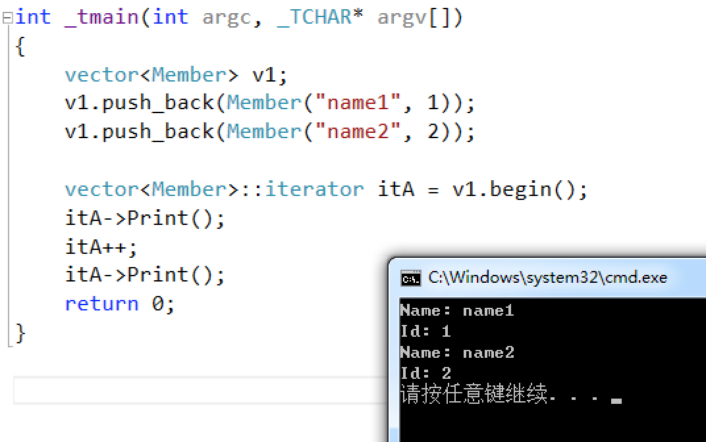
第二种情况
向Set和Map容器中添加自定义对象：
#include <set>#include <string>#include <algorithm>#include <iostream>using namespace std;class Member {public: string mStrName; int mId; Member(const string strName, const int id) { this->mStrName = strName; this->mId = id; } void Print() { cout << "Name: " << this->mStrName << endl; cout << "Id: " << this->mId << endl; }};struct MemFunctor { // 重载运算符，变为小于比较器 bool operator()(const Member& stu1, const Member& stu2) { return (stu1.mId < stu2.mId); }};void myPrintFunc(Member p) { p.Print();}int _tmain(int argc, _TCHAR* argv[]){ set<Member, MemFunctor> s; s.insert(Member("name1", 1)); s.insert(Member("name2", 2)); for_each(s.begin(), s.end(), myPrintFunc); return 0;}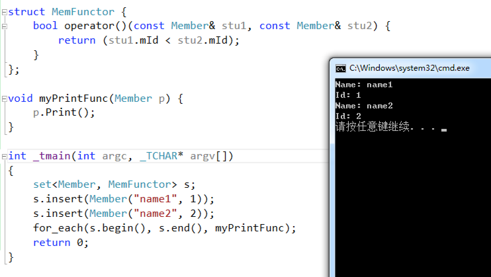